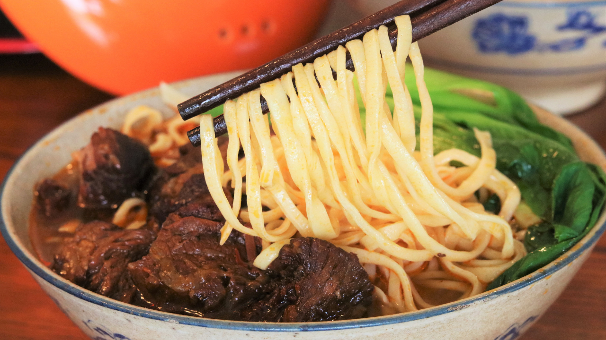

Beef noodles 牛肉麵

Description
Here's the recipe on how to make a perfect Taiwanese beef noodles
Ingredients
for 6 servings
- 6 qt water, plus more as needed
- 2 lb beef shank (910 g)
- 6 scallions, halved crosswise, divided
- 8 slices fresh ginger, divided
- 6 pods star anise, divided
- 1/2 cup vegetable oil (120 g)
- 6 cloves garlic
- 2 red chiles, halved lengthwise
- 1 medium white onion, sliced
- 1 piece rock sugar
- 3 tablespoons spicy bean paste, or regular bean paste
- 1/2 cup dark soy sauce (120 mL)
- 1/2 cup rice wine (120 mL)
- 1/2 cup light soy sauce (120 mL)
- 2 medium tomatoes, quartered
- 1 teaspoon white pepper
- 1 teaspoon salt
- dried bay leaf
- 2 bundles flour noodle
- 2 cups bok choy(50g)